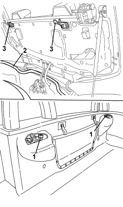
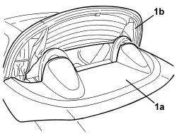
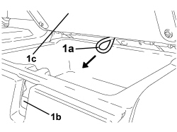
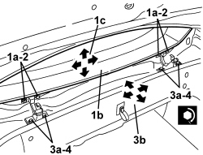
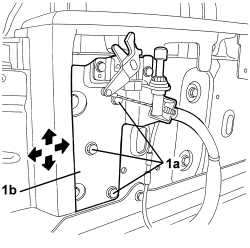

7025D10 HOOD HOUSING COMPARTMENT COVER - ALIGNMENT
- Path
- Procedures > 70 FITTINGS > 7025 COMPARTMENT COVERS > 7025D HOOD HOUSING COMPARTMENT COVER > 7025D10 HOOD HOUSING COMPARTMENT COVER - ALIGNMENT
- Kind
- repair procedure (removal / refitting; the operation number is the code)
- Applies to
- engines: 2.2 JTS, 3.2 JTS; all production periods
- Interactive page
- https://sloeber94.github.io/elrnDB-aBrrSpdr/en/#/946004075
Applies to: engines: 2.2 JTS, 3.2 JTS; all production periods
- Prepare the hood for the operation.
Op. 0010T79 HOOD HYDRAULIC SYSTEM - DISCHARGE AND RESTORE PRESSURE
- Open the hood housing cover using the electric control.
1. Check that the buffers are working properly. Replace them if necessary.
Op. 7025D16 HOOD HOUSING COMPARTMENT SELF-ADJUSTING BUFFERS - R.R.
2. Check that the hood housing compartment along the entire perimeter is working properly.
Op. 7025D13 HOOD HOUSING COMPARTMENT SEAL - R.R.
3. If necessary, adjust the position of the lock strikers.
Op. 7025D26 HOOD HOUSING COMPARTMENT COVER LOCK STRIKER (ONE), LEFT OR RIGHT - R.R.

Applies to: engines: 2.2 JTS, 3.2 JTS; all production periods
- If the adjustments indicated in the previous points are insufficient, adjust the position of the hood housing cover hinges as described below.
- Remove the left and right strikers.
Op. 7025D26 HOOD HOUSING COMPARTMENT COVER LOCK STRIKER (ONE), LEFT OR RIGHT - R.R.
1. Operate the retainer (1a) and open the cover (1b) behind the right seat.

Applies to: engines: 2.2 JTS, 3.2 JTS; all production periods
1. Pull the hydraulic system pressure discharge valve (1b) operating cable (1a) until it is in the end of travel position.

Applies to: engines: 2.2 JTS, 3.2 JTS; all production periods
1. Manually lower the hood housing cover (1a) until it is in the end of travel position, leaving the fifth arc (1b) raised.

Applies to: engines: 2.2 JTS, 3.2 JTS; all production periods
1. Open the boot lid using the emergency control (1a) after having activated the retainer (1b) and opened the cover (1c) behind the left seat.

Applies to: engines: 2.2 JTS, 3.2 JTS; all production periods
1. Working on both sides of the vehicle, loosen the bolts (1a) securing the hood housing cover to the hinges, then adjust the position of the actual cover using the slotted holes in the hinges.
2. After adjustment, tighten the bolts to the specified torque.
Component | Fastening | dia | Value (daNm) | Validity |
|---|---|---|---|---|
HOOD HOUSING COMPARTMENT COVER | Bolt | - | 0.7 ÷ 0.8 |
3. If it is still necessary, loosen the nuts (3a) fixing the hinges to the bodyshell and adjust the position of the cover (1b) using the slotted openings in the hinges.
4. After adjustment, tighten the nuts.
Component | Fastening | dia | Value (daNm) | Validity |
|---|---|---|---|---|
HOOD HOUSING COVER HINGES | Nut | - | 0.7 ÷ 0.8 |

Applies to: engines: 2.2 JTS, 3.2 JTS; all production periods
- Refit the left and right strikers.
Op. 7025D26 HOOD HOUSING COMPARTMENT COVER LOCK STRIKER (ONE), LEFT OR RIGHT - R.R.
If it is still necessary:
Op. 7040C12 HOOD HOUSING COMPARTMENT FRONT TRIM - R.R.
1. Working on both sides of the vehicle, undo the bolts (1a) for the supports (1b) for the locks and adjust the position of the locks using the slotted openings in the supports.

Applies to: engines: 2.2 JTS, 3.2 JTS; all production periods
- If necessary, adjust the position of the lock strikers.
Op. 7025D26 HOOD HOUSING COMPARTMENT COVER LOCK STRIKER (ONE), LEFT OR RIGHT - R.R.
Op. 7040C12 HOOD HOUSING COMPARTMENT FRONT TRIM - R.R.
- Restore the hood hydraulic system pressure.
Op. 7030H03 HOOD MANUAL OPENING FOLLOWING DEACTIVATION OF HYDRAULIC SYSTEM - CARRY OUT PROCEDURE
- Open the hood using the electric control then check that the hood housing compartment cover is correctly aligned with the bodywork.
Topics linked from this page (6)
- 0010T79 HOOD HYDRAULIC SYSTEM - DISCHARGE AND RESTORE PRESSURE
- 7025D13 HOOD HOUSING COMPARTMENT SEAL - R.R.
- 7025D16 HOOD HOUSING COMPARTMENT SELF-ADJUSTING BUFFERS - R.R.
- 7025D26 HOOD HOUSING COMPARTMENT COVER LOCK STRIKER (ONE), LEFT OR RIGHT - R.R.
- 7030H03 HOOD MANUAL OPENING FOLLOWING DEACTIVATION OF HYDRAULIC SYSTEM - CARRY OUT PROCEDURE
- 7040C12 HOOD HOUSING COMPARTMENT FRONT TRIM - R.R.